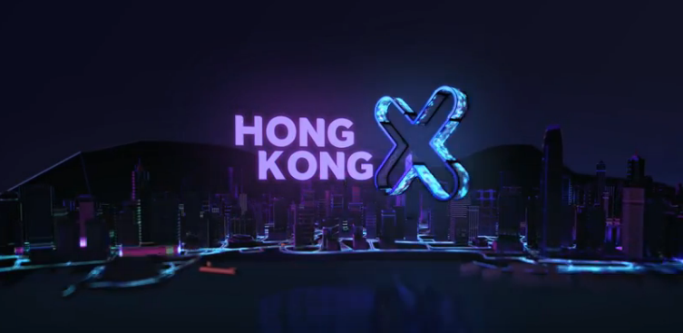

Introduction
The world has plunged into a crisis. The economic impact of the Covid-19 pandemic has been felt in several industries. Many advanced economies are expected to enter into recessions by the end of the year, with millions of people filing for unemployment. With several such negative reports floating around in the media, it is difficult for students and graduates to be optimistic about the near future. However, it is important for us to stay positive, especially considering the opportunities that have arisen because of this unique situation. Last Tuesday, we met Jason, the internal operations director of HKX, and Lucy, investment associate at HKX, to examine the impact of Covid-19 in greater depth. In particular, we focused on biotechnology and micro-chip startups. In this two-part series, we shall first explore the challenges and opportunities created by the pandemic, followed by an analysis of the impact of social media and Jason and Lucy’s tips for graduates and start-up aspirants.
Challenges of the Coronavirus for Industries
When we talk about the Coronavirus, we need not emphasize the downsides of the pandemic. Everywhere, production is halted and economies take a huge toll. According to Lucy, many shops have shut down causing delays in the supply chain. Therefore, Lucy identifies the biggest problem for the industry is the rising material cost. To make things worse, the shrink in consumption. We must agree from tourism to road haulage, from manufacturing to servicing, the industries alike are suffering. In this difficult situation, how do smaller startups find their ways out?
Lucy and Jason reassured us that most enterprises under HKX respond quickly to the changes. One of the advantages of small and medium enterprises (SMEs) is they are more flexible in their operation structure. In fact, they shared with us many of the companies they know have shifted their business online and employees are working from homes. Some of them are actively using E-commerce as an attempt to digitize their businesses. This shed a positive light on our economy.
This leads us to our second question- under the threat of COVID-19, are there more opportunities or challenges? While we might be inclined to say challenges dominate (we are stuck at home, we are bored and we have to learn to do everything online), Jason thought both opportunities and risks co-exists. He explained, “With great challenges come greater opportunities, startups under HKX need to adjust for a more cost-effective approach so they will not get eliminated.” For example, in the health-care sector, masks suppliers are exploring new production methods to satisfy the ever growing demand. Industries are improvising- online shopping is getting more popular and technology platforms actually benefit from the pandemic. This wave of Coronavirus is just another obstacle we need to overcome, and we will, like we did in 2003 SARS.
Opportunities of the Pandemic: How Can We Make Up for the Lost Time?
As the old saying goes “the greater the challenge, the greater the opportunity”, how can we take advantage of the pandemic and turn it into opportunity?
- Make good use of your time
- “5 skills you should learn during lockdown”
- Coding
- Digital Marketing
- Close a deal remotely
- Project Management
- Copywriting
- Start a business
- Come up with an idea
- Know the industry e.g. Are there any buyers? Competitors? Feasible in business e.g. privacy issue.
- Exchange your idea with people you trust and professionals who are knowledgeable of the trends and developments in the industry
- Take action (Build your team, find idendron in HKU)
- Focus on the long term
- Look outside of Hong Kong for any job opportunities and gain more international exposures
- Meet more different people from different backgrounds/industries and talk to them ( The key to success is not what you know but who you know)
- Be a more competitive candidate by sharpening your skills
- Keep an eye on the industrial trends/government policies e.g. The Greater Bay Area
As we have more free time now, why not make good use of our time and invest the time to do things that benefit us? Actually we can learn anything on the web nowadays e.g. YouTube, Google, Udemy, Coursera, Edx…
Actually there is no such “must-learn skill”, you can learn anything depending on your interests! Also, there are too many free resources on the web, so in order to save your time and choose the “right resources”, saying no to free resources is more important than saying yes.
We can see there are many problems in the society during the pandemic e.g. shortage of face masks, e-learning with insufficient support, increased demand for delivery services and in-home entertainment… As individuals, can we do something to solve these problems?
- How?
People always think that they have to be well-prepared before taking action and become reluctant to make a move, but bear in mind that nothing is well-planned and plans always cannot catch up with the changes, so taking action is the king.
We can see that more and more people started worrying about their future during the pandemic e.g. hard to find a job after graduation, but we believe that opportunities and risks co-exist and everything is possible if we are determined enough.
- How can we find opportunities?
Conclusion
Yes, all of us are adversely affected by the pandemic but that does not mean we cannot make the most out of our time in lockdown. Now that we have more time to ourselves, we could think about what we really want to do in the future. Take a step back and ask yourself, what are your interests? Is there anything you would want to try before you graduate? Or do you have a desired career? If you already have your eyes fixed on a specific role, congratulations. (Even better if you are looking into starting your own business!)
If you have not yet found your true calling, take this opportunity to invest and equip yourself. Just as industries are improvising to get around the virus, we could also actively adjust our mindsets. You should not let geographical constraints limit your potential. Look outside of Hong Kong if necessary, there is still so much for us to explore and learn about. Besides, we could benefit a lot from online courses- there are loads of information on social media. On that note, we should always keep a critical mind and evaluate sources with caution. If you need more insights on how social media plays a role in the pandemic, stay tuned for our next article! Until then, we wish you success in all your endeavour!
Reference:
BBC news- Coronavirus: Six Industries crying out for help https://www.bbc.com/news/business-52200386 , https://www.youtube.com/watch?v=oRkvO6RWVtg